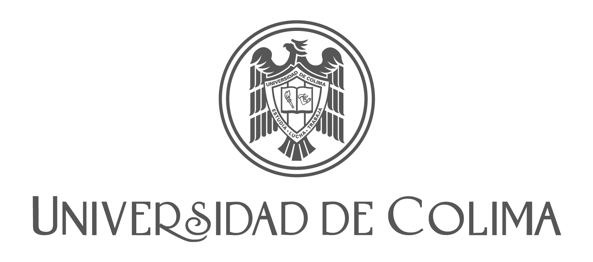

Perfil profesional
Estudiante de Ingeniería de Software en búsqueda de prácticas profesionales, certificado como Scrum Master y Product Owner. Experiencia en desarrollo de aplicaciones (Python, Java, JavaScript, Git, SQL) y motivación por aprender y aportar valor en entornos reales con disciplina ágil.
Experiencia
- Laboratorio de Vulcanología, Universidad de Colima (Mar 2024 – Jul 2025): Aprendiz de Software. Automatización de formatos Redalyc y optimización de flujos digitales.
- Universidad de Virginia (Jul 2022 – Ago 2022): Voluntario en análisis de datos y visualización de resultados.
Educación
Facultad de Telemática, Universidad de Colima
Licenciatura en Ingeniería de Software
Ago 2022 – Presente
Bachillerato Núm. 5
Analista Programador
2019 – 2022

Habilidades
- Lenguajes: Python, Java, JavaScript, C/C++, R, PHP, Ruby, .NET, SQL, HTML, CSS, XML, LaTeX
- Herramientas: Git, Docker, Agile Project Management, BPM, Design Thinking, Lean Change Management
- Soft Skills: Comunicación efectiva, Trabajo en equipo, Resolución de problemas, Adaptabilidad, Negociación
Escala de competencias
| Tecnología/Herramienta | Nivel | Notas |
|---|---|---|
| Python | 4 | Automatización y análisis de datos |
| Java | 3 | Desarrollo de aplicaciones y consumo de APIs |
| JavaScript | 3 | Desarrollo web y consumo de APIs |
| C/C++ | 2 | Fundamentos académicos y algoritmos |
| R | 2 | Análisis de datos y estadística básica |
| PHP | 2 | Fundamentos y desarrollo web básico |
| Ruby | 1 | Fundamentos académicos |
| .NET | 2 | Fundamentos académicos |
| SQL | 3 | Consultas y modelado básico |
| HTML | 3 | Maquetación web |
| CSS | 3 | Estilizado y diseño web |
| XML | 3 | Intercambio de datos |
| LaTeX | 4 | Redacción técnica y plantillas |
| Git | 3 | Control de versiones y flujo básico (branch y PR) |
| Docker | 2 | Contenedores de desarrollo |
| Agile Project Management | 3 | Gestión ágil de proyectos |
| BPM | 2 | Modelado de procesos de negocio |
| Design Thinking | 2 | Solución creativa de problemas |
| Lean Change Management | 2 | Gestión de cambio ágil |
| Jira / Trello / monday.com | 3 | Gestión de tareas y tableros Scrum/Kanban |
| Miro | 4 | Storymapping, retros y diagramas |
| Teams / Slack / Meet / Zoom | 4 | Colaboración y facilitación de ceremonias |
| Planning Poker | 4 | Estimación relativa (story points) |
| VSCode / Android Studio / Firebase | 2–4 | Entornos de trabajo y desarrollo |
| Excel / Sheets | 4 | Tablas y gráficos paramétricos |
Nota: 1=Básico, 5=Experto.
Certificaciones
- International Agile Management - Scrum Master Dic 2024 – Jul 2025
- Scrum Product Owner Certified (SPOC™) Jul 2025 – Ago 2025
- Scrum Fundamentals Certified (SFC™) Ago 2025 – Sep 2025
- Power BI: Toma mejores decisiones basadas en datos Sep 2025
- Python Programming Oct 2024 – Nov 2024
Idiomas
- Español: Nativo o Bilingüe
- Inglés: Dominio Profesional